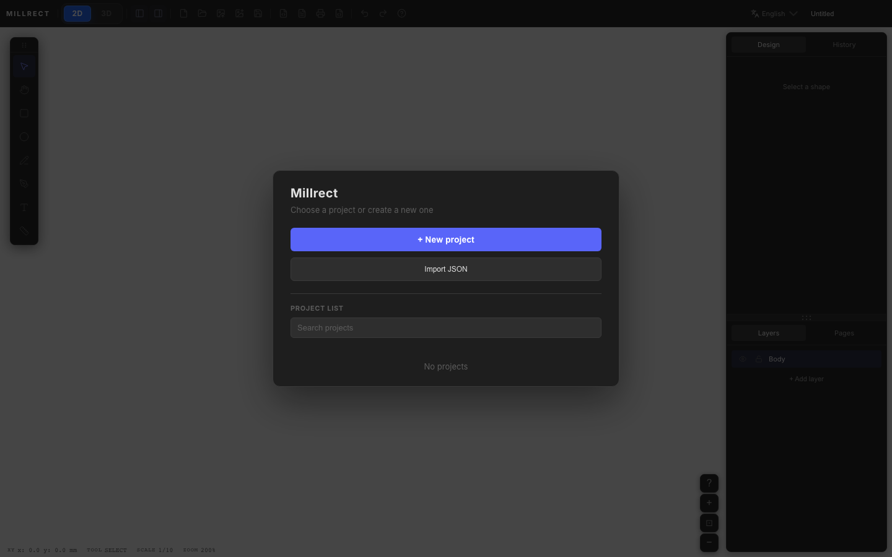
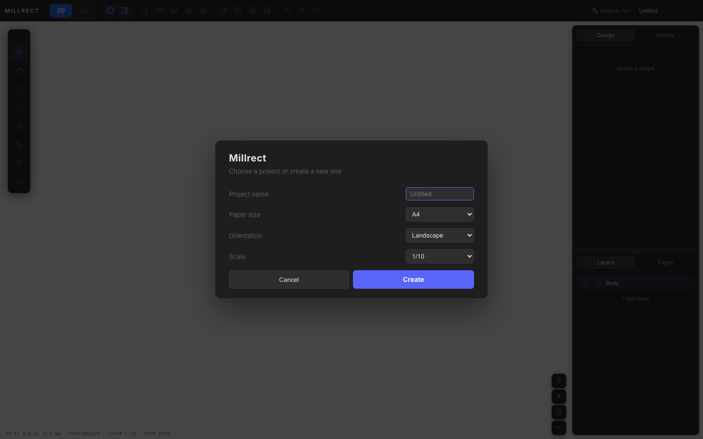

Getting Started
How to launch Millrect, create your first project, and draw your first shape.
First STL
Skip the architecture for now — just follow these four steps.
-
Open the app
millrect.com/app (browser) or the macOS desktop app -
Create a new project
In the startup dialog, choose + New Project → confirm paper/scale → Create -
3D preview
Toolbar 3D button to view the solid -
Export STL
In the 3D panel, click Export STL
Launch the app
Millrect runs in the browser (millrect.com/app) or as a desktop app. Use the browser without installation; install the desktop build for MCP / AI integration and text-to-3D outlines — see Download the macOS desktop app (macOS only for now). Save and open projects as JSON in the browser app too.
Launch Millrect from Applications. Unsigned pre-release builds may show a security warning on first launch — see how to open the app.
On startup you can resume your last session or create a new project. Open this guide anytime from the in-app menu: Help → Documentation, or Help → Search Help (⌘⇧/).
New project
Choose + New Project for a blank canvas. The startup dialog lets you search the project list, reopen saved projects, import JSON, or create a new project.

Clicking + New Project opens the creation form.

| Field | Description |
|---|---|
| Project name | You can change it later in the toolbar (top left). |
| Paper size | A4 / A3 etc. Sets the canvas size. |
| Orientation | Landscape or portrait. |
| Scale | e.g. 1/10 means 1 mm on paper = 10 mm in real size. Common choices: 1/1 or 1/10. |
After Create, the main window opens with a white gridded canvas.
Try 3D
To try 3D, create a new project, draw a closed outline on the top view, then use Add page in the Pages tab to add a front view (front) or right view (right). If that face already exists, it is disabled in the add menu.

The 2D / 3D switch is on the left side of the toolbar. When you click 3D, the preview panel appears immediately and the mesh appears after generation. See also 3D Generation — workflow.
For a blank canvas and your own pages, use New Project above.

Draw your first shape
-
Select the rectangle tool
Click the rectangle icon in the left tool palette. -
Drag on the canvas
The drag area becomes a rectangle. With snap enabled, it attaches to grid or endpoints. -
Select and edit
Switch back to the selection tool (arrow), click the shape to move or resize. In the Design tab you can change fill and stroke; fill color also appears in the 3D preview.

Your work is autosaved. To keep a file on disk, use the Save button in the toolbar (or File → Save) to write a project file.
Key concepts
| Point | Description |
|---|---|
| 2D drawing is primary | Drawings are the source of truth. 3D is generated automatically from them. |
| 3D needs multiple pages | A top view alone is not enough — add a front view (or side view). The 3D sample starts with two pages. |
| Undo / Redo | Shape edits can be undone (Ctrl+Z / Ctrl+Y). Zoom and pan are not undone. |
| Fill & stroke | Set in Design → Appearance. Fill color is used for 3D mesh color. |
Next steps
- Interface — panels and toolbar
- 2D Drawing — tools and layers
- 3D Generation — top + front views → solid
- Full documentation in Japanese